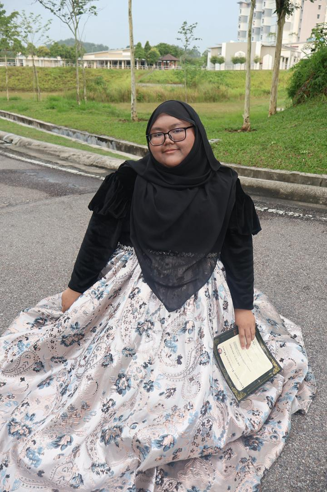

Profile
Ain Asyikin Binti Anuar
From:Banting, Selangor.
Age:20 years
Date of birth:28th July 2005
Race:Malay
Language known:Malay, English
My name is Ain Asyikin Binti Anuar. Some people call me Ain or Cikin.I am someone who enjoys simple things in life, especially things that make me happy and comfortable. Purple is my favorite color because it gives a calm and aesthetic vibe that represents my personality. I also love delicious food, as I believe good food can always improve my mood and make moments more enjoyable. Through my interests and preferences, I hope people can get to know me better and understand a little about who I am.
My Hobby
One of my favourite hobbies is playing games because it allows me to relax and take a break from my daily routine. Gaming not only helps me reduce stress and unwind after a long day, but it also improves my focus, problem-solving skills, and creativity. Through different types of games, I can challenge myself, explore new worlds, and even connect with friends who share the same interest.
Things I Treasure the Most

Cat
Cats bring comfort and calmness into my life.
Family
My family is my biggest support system.
Coding
Coding allows me to express creativity and logic.
Friends
Friends make my journey more meaningful.They bring laughter,support, and unforgettable memories.

Delicious food
Good food always makes me happy. Exploring different cuisines and enjoying delicious meals is one of my simple joys in life.

Beach
The beach is one of my favorite places to relax and unwind. Listening to the sound of waves, feeling the sea breeze, and watching the sunset give me peace and happiness.